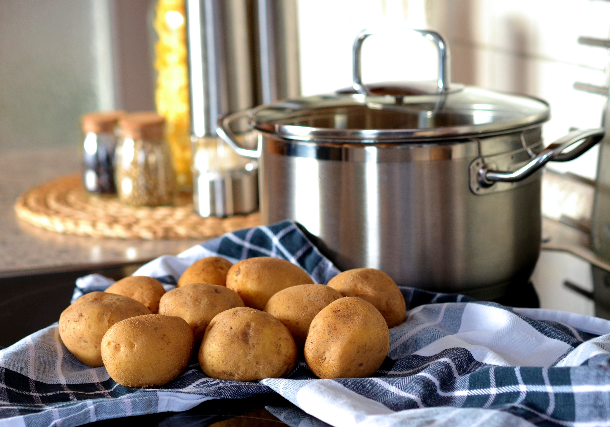
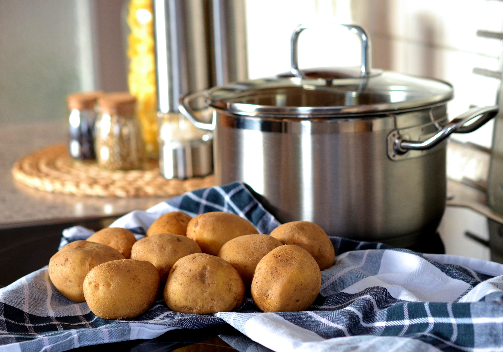
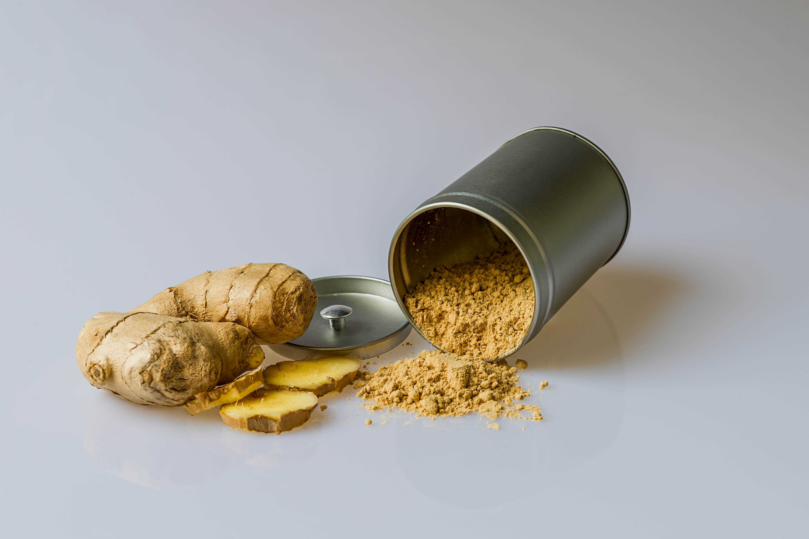
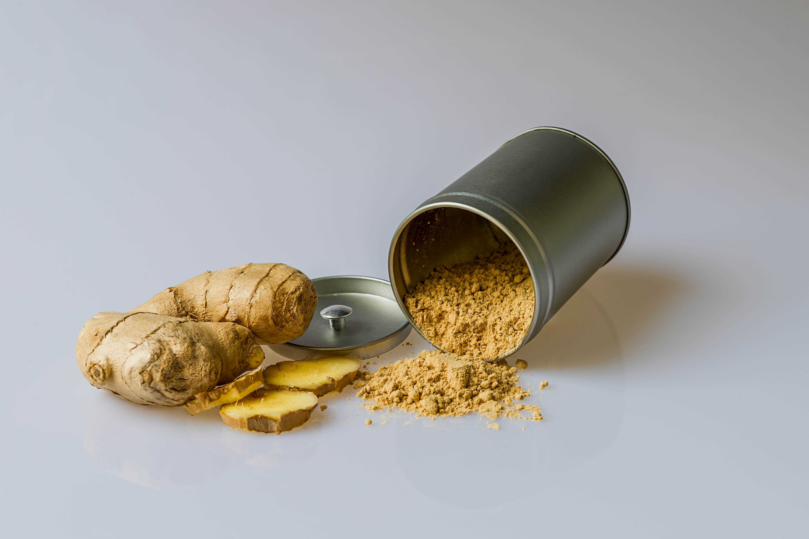

भाग १- मूळ भाज्या
1. कांदा
कापणीपूर्व


माती आणि हवामान:
सर्व प्रकारच्या जमिनीत कांदा पिकवता येईल. जसे वाळूची लौम, मातीची लौम, गाळाची लौम आणि जड माती. तथापि, यशस्वी कांदा लागवडीसाठी सर्वोत्तम माती म्हणजे खोल, फ्रिबल लोम आणि चांगले ड्रेनेज, आर्द्रता धारण क्षमता आणि पुरेशी सेंद्रिय पदार्थ असलेली अलंकृत माती. हे उच्च आम्लता आणि क्षारतेबद्दल संवेदनशील आहे आणि आदर्श पीएच 5.8 ते 6.5 आहे
कांदा हे समशीतोष्ण पीक आहे परंतु समशीतोष्ण, उष्णकटिबंधीय आणि उपउष्णकटिबंधीय हवामान ासारख्या विविध हवामानीय परिस्थितीत पिकवले जाऊ शकते. वनस्पतिजन्य टप्प्यासाठी इष्टतम तापमान १३-२४°से. आणि बल्बविकास १६-२५°से.
लागवड
पेरणीची वेळ-
खरीप जूनचा पहिला आठवडा, रंगदा - जुलैचा दुसरा आठवडा, रब्बी - ऑक्टोबरचा दुसरा आठवडा
लागवडीची वेळ
खरीप - ऑगस्टचा पहिला आठवडा, रंगदा- दुसरा आठवडा सप्टेंबर, रब्बी - डिसेंबरचा दुसरा आठवडा.
बियाणे:8 ते 10 किलो/हेक्टर
लागवडीचे अंतर: खरीप आणि रंगदासाठी 15 बाय 10 सेंमी, आणि रब्बी उन्हाळ्यासाठी-12.5 बाय 7.5 सेमी (साध्या रांगा)
अन्न सूत्रे : प्रथम नांगरणीच्या वेळी फार्मयार्ड खताचे 20-25 टोन लावा जेणेकरून नंतरच्या नांगरणीदरम्यान ते पूर्णपणे मिसळले जाऊ शकेल,
देखभाल :
अ) तण - दर ८-१० दिवसांनी नियमित अंतराने, ब) १ महिन्यांच्या वृक्षारोपणानंतर खतांचा डोस.
*जल व्यवस्थापन: पिकाचा हंगाम आणि गरजेवर आधारित दर ८ ते १० दिवसांनी पाणी.
सोबती पीक: गाजर, बीट, मिंट, टोमॅटो, लेट्यूस
वनस्पती रोटेशन:बीट, बटाटा, गाजर आणि त्यानंतर कोबी, फुलकोबी, ब्रोकोली नंतर लागवड करा
उत्पन्न:
खरीप हेक्टरी १५-२० टन
रंगदा = हेक्टरी २०-२५ टन, रब्बी : हेक्टरी २५-३० टन.
एकात्मिक कीटक आणि रोग व्यवस्थापन :
प्रतिबिंबित प्लास्टिक चांदीचा रंग आणि अ ॅल्युमिनियमने रंगवलेला काळा मल्चेस बियाणे पिकातील थ्रिप्स परत वून घेण्यात प्रभावी ठरला.
कांद्याच्या भूखंडाभोवती मक्याच्या दोन रांगा किंवा गव्हाच्या आतील रांग आणि मक्याची बाह्य रांग.
कापणीनंतर-
कांदा कापणीनंतर लगेचच २०-३०°से.) आणि ७०% सापेक्ष आर्द्रता १२ ते २४ तास या दराने वाळवण्याच्या खोलीत ठेवून बरा करणे आवश्यक आहे.
प्रकाशाच्या संपर्कात बरे झाल्यानंतर तेथे असू नये कारण यामुळे बाह्य तराजू हिरवा गार होईल
स्प्राउट सप्रेसंटचा प्रीहार्वेस्ट अॅप्लिकेशन, जसे की मॅलेइक हायड्राझिड, रिटार्डस् स्प्राउटिंग आणि साठवण जीवन लांबवते.
2. बटाटा
पूर्व कापणी
 

माती आणि हवामान :
प्रकाश, सुपीक, सैल आणि चांगल्या प्रकारे निथळलेली आम्लमाती (पीएच ५.० ते ७.०). कडक माती कंदांसाठी चांगली नाही. जर तुमच्याकडे कठीण माती असेल, तर लागवडीच्या बेडमध्ये सेंद्रिय पदार्थ काम करून लागवडीपूर्वी आपली माती तयार करा. बटाट्याच्या वनस्पतींना भरपूर पाण्याची गरज असते आणि दुष्काळ सहन करू शकत नाही. तथापि, बटाटे खूप अनुकूल आहेत आणि माती आणि हवामानाची स्थिती आदर्श नसली तरी ते नेहमीच आदरणीय गुणवत्ता निर्माण करतील. (यासाठी वेगवान मोठ्या प्रमाणात दरासाठी कंदीकरणाच्या वेळी कमी तापमान आणि कमी दिवसाची परिस्थिती यांसारख्या अनुकूल पर्यावरणीय परिस्थितीची आवश्यकता आहे.)
लागवड:
पेरणीची वेळ: खरीप जून-जुलै, रब्बी ऑक्टोबर - नोव्हेंबर
बीज प्रकार - कुधारी चंद्रमुखी, कुधारी ज्योती
कुधारी राजा, कुखरी लवकर, कुधारी सिंधी पेरणी दर : २० ते २५ क्यू/हा (३० ते ५० ग्रॅम वजन)
ट्यूब फॉर्मेशन १५-२० अंश सेल्सिअस (६५-७० डिग्री फॅरनहाइट) येथे होते. तापमान ३० अंश सेल्सिअसपेक्षा जास्त असताना बटाटे चांगले काम करत नसल्यामुळे आपली लागवड वेळेनुसार निवडा. (९० अंश फॅरनहाइट) आणि ३५ अंश सेल्सिअस ओलांडल्यास त्याचा मृत्यूदेखील होऊ शकतो. (९५ अंश फॅरनहाइट) जर तुम्ही बियाणे वापरत नसाल, तर प्रत्येक तुकडा अशा प्रकारे आपल्या बिया कापा
कमीतकमी 2 कंद असतात आणि प्रत्येक तुकडा 1 इंचापेक्षा मोठा असतो. बटाटे 2 दिवस आधी कापा आणि एकदा सडण्यापासून रोखण्यासाठी बाजू कोरडी होऊ द्या.
लागवड: कापलेली बाजू खाली, ४५ बाय ३० सेंमी, एकमेकांव्यतिरिक्त, डोळे वर दाखवत, ६-८ इंच मातीत खोल.
अन्न सूत्रे: मातीच्या पलंगाच्या तळाशी सडलेले खत किंवा सेंद्रिय कंपोस्ट पसरवा आणि मिसळा. जमिनीच्या तयारीदरम्यान फार्मयार्ड खत किंवा कंपोस्टचे 250 500 क्यू/हा, शक्यतो लागवडीपूर्वी पंधरा दिवस
मेंटेनन्स: आठवड्यातून २ वेळा १-२ इंच पाण्याने वनस्पतीचे पाणी घ्या. फुलांच्या काळात चांगले पाणी. (फर्रो पद्धत सामान्यपणे पाळली जाते) मुळाला सैल झाकण्यासाठी आणि वनस्पतीला आधार देण्यासाठी ६ इंच उंच होताच वनस्पतीला टेकडीवर ठेवा. यामुळे बटाट्याचे सन बू होण्यापासून संरक्षण होईल. वनस्पतींच्या फुलांनंतर (लागवडीनंतर ९० ते ११० दिवसांनी) बटाटे सहसा २-३ आठवड्यांनंतर कापणीसाठी तयार असतात. माती कोरडी असताना कापणी करा, त्यांना धुवू नका आणि स्टोअर थंड कोरडे ठिकाण आहे.
सोबती:बीन्स, कोबी, लेट्युस
वनस्पती रोटेशन: कोबी, फुलकोबी आणि ब्रोकोली नंतर वनस्पती करा आणि त्यानंतर काकडी, टोमॅटो, बैंगन (वांगणे), सिमला मिरची (मिरची) यांचा क्रमांक लागतो.
उत्पन्न:प्रति हा २० ते २५ टन.
कापणीनंतर -
त्यांच्या राहण्याची गुणवत्ता सुधारण्यासाठी कंदांच्या पृष्ठभागावरील अतिरिक्त आर्द्रता काढण्यासाठी कापणी केलेले कंद नेहमी लवकर कोरडे करा.
साठवण शेडमध्ये कापणी केलेला कंद नेहमी कोरडा करा, सूर्याच्या संपर्कात येने बटाट्याला हिरवा गारवा.
कापणीनंतर पाऊस पडल्यास कंद ताबडतोब साठवत नाही.
नेहमी ९५ टक्के सापेक्ष आर्द्रतेसह २५ अंश सेंटीग्रेडवर उपचार प्रक्रियेचे अनुसरण करा,
सर्व खराब झालेले आणि रोगग्रस्त कंद वर्गीकरणादरम्यान काढून टाकले पाहिजेत.
३. आले
पूर्व कापणी-
 

आले सुगंधी रायझोमसाठी पिकवले जाते जे मसाला आणि औषध दोन्ही म्हणून वापरले जाते.
माती आणि हवामान:
चांगल्या प्रकारे निथळलेल्या वाळूच्या मातीच्या लोम मातीत आले चांगले वाढते.
संपूर्ण पीक असल्यामुळे वर्षानुवर्षे एकाच शेतात आले पिकवणे इष्ट असू शकत नाही.
पीक पाणी साचू शकत नाही आणि म्हणूनच चांगल्या ड्रेनेजअसलेल्या जमिनींना त्याच्या लागवडीसाठी प्राधान्य दिले जाते.
जिंजर उबदार दमट हवामानात वाढते, पावसाचे अन्न आणि सिंचित दोन्ही स्थितीत वाढवले जाऊ शकते.
यशस्वी लागवडीसाठी रायझोमस् स्प्राउट होईपर्यंत पेरणीच्या वेळी मध्यम पाऊस, वाढत्या कालावधीत बऱ्यापैकी मुसळधार आणि चांगले वितरित शॉवर आणि कापणीच्या सुमारे एक महिना आधी कोरडे हवामान आवश्यक आहे.
लागवड
(अ) जमिनीची तयारी - सेंद्रिय लागवडीमध्ये किमान टिलज पद्धती असतात.
१५ सेंमी उंची, १ मीटर रुंदी आणि सोयीस्कर लांबीच्या बेड बेडमध्ये किमान ५० सेंमी अंतर देणे तयार केले जाऊ शकते.
कीटक आणि रोगामुळे सजीवांना होणाऱ्या गुणाकाराची तपासणी करण्यासाठी बेडचे सौरीकरण फायदेशीर आहे. काम पूर्ण झाल्यानंतर मातीच्या सौरीकरणासाठी वापरल्या जाणार् या पॉलिथीन चादरी सुरक्षितपणे दूर ठेवल्या पाहिजेत
(ब) सांस्कृतिक प्रथा-
पारंपारिक शेतातून सभोवताली २५ मीटर रुंद अंतर सोडले जाणार आहे. या आयसोलेशन बेल्टमधील उत्पादनाला सेंद्रिय मानले जाणार नाही.
हिरव्या पानांनी आले बेड मल्च करणे हे बियाणे रायझोमचे अंकुर वाढविण्यासाठी आणि मुसळधार पावसामुळे माती धुण्यापासून रोखण्यासाठी एक आवश्यक ऑपरेशन आहे. हे जमिनीत सेंद्रिय पदार्थ जोडण्यास आणि पीक हंगामाच्या नंतरच्या भागात आर्द्रता जतन करण्यास मदत करते.
पहिले मल्चिंग लागवडीच्या वेळी १० -१२ टी/हा @ हिरव्या पानांनी केले जाणार आहे. लागवडीनंतर 40 आणि 90 व्या दिवशी 5 टी/हा @ पुनरावृत्ती केली पाहिजे
मल्च म्हणून लॅन्टाना कॅमारा आणि व्हिटेक्स नेग्नोडोचा वापर शूट बोररचा प्रादुर्भाव कमी करू शकतो. सूक्ष्मजीवक्रिया आणि पोषक तत्त्वांची उपलब्धता वाढविण्यासाठी प्रत्येक मल्चिंगनंतर गायीच्या शेणाचे स्लरी किंवा द्रव खत पलंगावर ओतले जाऊ शकते.
साचलेले पाणी काढून टाकण्यासाठी आंतररांगांमध्ये योग्य ड्रेनेज चॅनेल दिले जाणार आहेत.
वार्षिक पीक असल्यामुळे आवश्यक असलेला रूपांतरण कालावधी दोन वर्षांचा असेल.
पेरणीची वेळ:
दक्षिण भारतात एप्रिल-मे आणि थोड्या वेळाने उत्तर भारतात. दक्षिण भारतात मध्य एप्रिलपर्यंत आणि पहिल्या आठवड्यात पेरणी
उत्तर भारतात मे जास्त उत्पन्न देईल.
उच्च उत्पन्न देणाऱ्या स्थानिक जातींमधून किंवा संरक्षित बियाणे राइझोम्स सेंद्रिय लागवड केलेल्या शेतांच्या संसर्गापासून मुक्त बियाणे पदार्थ.
बियाण्यांच्या राइझोमवर कोणत्याही रसायनांनी उपचार करू नयेत.
प्रत्येकी २०-३० ग्रॅम वजनाचे आणि कमीतकमी एक कळी असलेले बियाणे राइझोमचे तुकडे लागवडीसाठी योग्य आहेत.
पेरणीचे प्रमाण:
600-1000 किलो रायझोम्स/एकर जमीन
लागवड
लागवडीच्या वेळी २५ ग्रॅम पावडर केलेला कडुनिंबाचा केक लावा आणि प्रत्येक खड्ड्यात मातीत चांगले मिसळा जे २०-२५ सेंमी अंतरात आणि रांगांमध्ये घेतले जाते.
बियारा राइझोम उथळ खड्ड्यांमध्ये ठेवले जाऊ शकतात आणि चांगले सडलेले जनावरांचे खत किंवा त्रिचोडरमा (ट्रायकोडर्मासह १० ग्रॅम कंपोस्ट ऑक्युक्युलेटेड) मिसळलेले कंपोस्ट मिसळले जाऊ शकतात.
जिंजर रायझोम्स २५ सेंमी अंतरावर २५ सेंमी अंतरावर सलग २०-२५ सेंमी अंतरावर प्लेट केले जातात.
सिंचित पिकाच्या बाबतीत, कट्टे 40-45 सेंमी अंतरात बनवले जातात आणि जिंजर लागवड 24-30 सेंमी अंतरावर कट्ट्यांच्या वर उथळ खड्ड्यांमध्ये केली जाते
अन्न सूत्रे:आले लाजड मनूरिंग आवश्यक असते.
चांगल्या प्रकारे सडलेले एफवायएम खड्ड्यांमध्ये बेसल डोस म्हणून 2.5 ते 3 टन / एकर @.
नीम केक @ 800 किलो / एकर
देखभाल:
(अ) तण व्यवस्थापन- दोन तण.
दुसर् या मल्चिंगच्या अगदी आधी पहिले तण आणि तण वाढीच्या तीव्रतेनुसार पुनरावृत्ती.
तण पदार्थ मल्चिंगसाठी वापरले जाऊ शकतात. गरज पडल्यास तणीकरणाची पुनरावृत्ती तिसऱ्यांदा करायची आहे.
वनस्पती एक किंवा दोन वेळा पृथ्वीवर असतात.
(ब) जल व्यवस्थापन
साचलेले पाणी काढून टाकण्यासाठी आंतररांगांमध्ये योग्य ड्रेनेज चॅनेल दिले जाणार आहेत.
५-१० दिवसांच्या वेगवेगळ्या अंतराने सिंचन.
सोबती:
आले एक्स-जिंजर-केळी-लेगुम किंवा आले-भाजी-लेग्यूमसह रोटेशनमध्ये लेग्युमिनस पीक
सावली देणाऱ्या वनस्पती, उदा. केळी, कबुतर-वाटाणा, वृक्ष कलाकार आणि क्लस्टर बीन (गवार) सह आंतरपीक केले जाते.
मिश्र पीक म्हणून, नारळ, तरुण कॉफी आणि पश्चिम किनाऱ्यावरील संत्र्याच्या मळ्यात.
हिमाचल प्रदेशात जास्त उंचीवर टोमॅटो आणि मिरचीसह आले आंतरपीक केले जाते.
वनस्पती ंचे आवर्तन : आले हे एक संपूर्ण पीक आहे म्हणून ते एकाच शेतात पिकवणे टाळणे आणि सुपीकपीकपुनर्स्थापित करण्यासाठी त्याच जमिनीसाठी शेंगदाणे पिकांची लागवड चांगली आहे.
उत्पन्न:
सुमारे ८-१० महिन्यांत कापणी. प्रति हॅक्टेअर सरासरी उत्पन्न 15 ते 25 टन
परिपक्व पाने पिवळी पडतात आणि हळूहळू वाळायला लागतात.
गुच्छ कुदळ किंवा खोदून काळजीपूर्वक उचलले जातात आणि राइझोम वाळलेली पाने, मुळे आणि अदरिंग मातीपासून वेगळे केले जातात.
भाज्यांचे आले बनवण्यासाठी, ६ व्या महिन्यापासून कापणी.
कोरड्या आलेचे उत्पन्न ताज्या आलेच्या १६-२५ टक्के आहे.
एकात्मिक कीटक आणि रोग व्यवस्थापन:
शूट बोरर ही प्रमुख कीटकग्रस्त आले आहे. कीटक व्यवस्थापनासाठी नियमित क्षेत्र टेहळणी आणि फायटोसॅनिटरी उपायांचा अवलंब करणे आवश्यक आहे. जुलै -ऑक्टोबर या कालावधीत हे दिसून येते. बोररने ग्रस्त शूट शोधून काढले आणि शूट कापून सुरवंट बाहेर काढले आणि त्यांचा नाश केला. कडुनिंबाचे तेल फवारा (0.5%) आवश्यक आढळल्यास पंधरवड्याच्या अंतराने. प्रौढ पतंगांना आकर्षित करण्यासाठी आणि गोळा करण्यासाठी हलके सापळे उपयुक्त ठरतील
मऊ सडा किंवा रायझोम सडा हा आले शेतीचा एक मोठा आजार आहे. आले लागवडीसाठी क्षेत्र निवडताना हे पाहण्यासाठी भाग चांगला निचरा झाला आहे कारण पाण्याच्या स्थिरतेमुळे वनस्पतीसंसर्गाची विल्हेवाट लावते. रोगमुक्त भागातून बियाणे रायझोम निवडा कारण हा आजार बियाणे बो आहे. अंथरुणतयार करण्याच्या वेळी केलेल्या मातीचे सौरीकरण बुरशीचे लसीकरण कमी करू शकते. तथापि, जर हा आजार लक्षात आला, तर त्याचा प्रसार कमी करण्यासाठी रायझोमच्या सभोवतालच्या मातीसह प्रभावित गुच्छ काळजीपूर्वक काढून टाकले पाहिजेत. लागवडीच्या वेळी आणि नंतर गरज पडल्यास त्रिचोडर्मा लागू केला जाऊ शकतो. बोर्डो मिश्रणाचा प्रतिबंधित वापर (1%) रोगप्रवण भागात स्पॉट अनुप्रयोग म्हणून त्यावर नियंत्रण ठेवण्यासाठी केले जाऊ शकते.
कापणीनंतर
बियाण्यांचे जतन:
पीक ६-८ महिन्यांचे आणि अजूनही हिरवे असताना शेतात निरोगी आणि रोगमुक्त गुच्छ चिन्हांकित केले जातात.
सूर्य आणि पावसापासून संरक्षण करण्यासाठी शेडच्या आत बनवलेल्या सोयीस्कर आकाराच्या खड्ड्यांमध्ये बियाणे राइझोम साठवले जातात. खड्ड्यांच्या भिंतीवर गायीच्या शेणाच्या पेस्टचा लेप लावला जाऊ शकतो.
या खड्ड्यांमध्ये चांगल्या वाळलेल्या वाळूसह किंवा धुळीसह बियाण्यांचे रायझोम ्स साठवले जातात (म्हणजे बिया राइझोम्सचा एक थर घाला, नंतर वाळूचा २ सेंमी जाडथर ठेवा किंवा धूळ पाहिली).
पुरेशा आराधनाकरण्यासाठी खड्ड्यांच्या वरच्या बाजूला पुरेशी दरी सोडायची आहे.
खड्ड्यांना एक किंवा दोन लहान छिद्रांसह लाकडी फळीने झाकले जाऊ शकते.
खड्ड्यांमधील बियाणे राइझोम्स ला वीस दिवसांतून एकदा तपासणी ची आवश्यकता असते ज्यामुळे श्लेजआणि रोगग्रस्त रायझोम ्स काढून टाकले जातात.